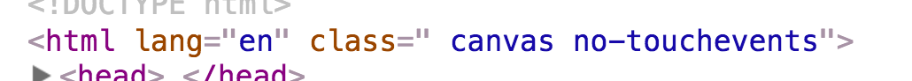
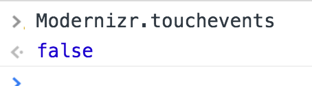

Capacité d'un même site web à s'adapter à son environnement de visualisation
Le responsive ne concerne pas que la résolution
En opposition avec l'ancienne pratique qui consistait à faire plusieurs sites et à rediriger l'utilisateur selon le device détecté
Par défaut, les navigateurs mobile et certains navigateurs tablette vont tenter d'adapter le design du site en dézoomant
Ce comportement va nous gêner car nous souhaitons adapter nous même le design
Introduite par Apple avec l'arrivée de l'iPhone, la balise meta viewport permet de faire cela
Elle met à disposition plusieurs propriétés à mettre dans l'attribut content séparées par des virgules
Empêcher le zoom initial du navigateur
et empêcher l'utilisateur de zoomer
Cette meta n'ayant jamais été proposée au W3C ce dernier à proposé sa propre version fonctionnant en CSS avec des propriétés similaires
@-ms-viewport {
width:device-width;
zoom:1;
user-zoom:fixed;
}
@viewport {
width:device-width;
zoom:1;
user-zoom:fixed;
}
N'est pratiquement supportée que par IE
Par défaut, les navigateurs proposent une feuille de style de base (padding sur le body, marge sous un paragraphe, font par défaut, etc.)
Cette feuille de style initial varie selon le navigateur
Il faudrait pouvoir la réinitialiser pour avoir le même résultat quelque soit le navigateur
Il existe plusieurs CSS dont c'est le but
Le reset choisi doit être ajouté avant tout autre CSS et dès le début de l'intégration
Il peut arriver qu'on ait besoin de détecter quelles sont les capacités du device
Détecter manuellement prendrait beaucoup de temps
La librairie Modernizr permet de le faire facilement
Modernizr va rajouter des classes dans la balise <html>

Ces données seront aussi accessible en JS

Sur de nombreux devices ayant des écrans tactiles, il faut attendre un certain temps (environ 300ms) avant qu'un tap soit pris en compte
Ce délais permet au navigateur de s'assurer que l'utilisateur n'est pas en train de faire un double tap permettant en général de zoomer dans la page.
La librairie FastClick permet de réduire ce temps
<script type='application/javascript' src='fastclick.js'></script>
<script>
if( 'addEventListener' in document )
{
document.addEventListener( 'DOMContentLoaded', function()
{
FastClick.attach(document.body);
}, false );
}
</script>
Chaque site à besoin d'icônes (et pas que le favicon)
Les icônes peuvent apparaître dans les favoris, sur la home du smartphone, dans l'onglet, etc.
Le site Real Favicon Generator permet de les générer facilement
Technique permettant d'adapter la feuille de style en fonction du périphérique et de ses différents critères
Peut-être appliquée de 3 façons différentes :
En HTML
<link rel="stylesheet" href="smallscreen.css" media="condition"/>
En CSS
@media condition
{
/* Mon CSS */
}
En Javascript
<script>
if( window.matchMedia( 'condition' ).matches )
{
/* Mon JS */
}
</script>
@media (width:700px)@media (min-width:700px)@media (min-device-width:700px)@media (min-width:700px) and (max-width:1000px)@media (min-device-pixel-ratio:1.5)@media tv and (orientation:portrait)@media print@media (-webkit-min-device-pixel-ratio:1.5),(min-device-pixel-ratio:1.5)Par défaut, les navigateurs non compatibles vont appliquer le CSS
Pour éviter cela, il faut démarrer la condition par only screen
@media only screen and (min-width:700px)Can I Use : http://caniuse.com/#feat=css-mediaqueries
Treehouse : http://teamtreehouse.com
Elysée : http://www.elysee.fr
JR & associée : http://www.jr-associee.com
Faire un site responsive concerne à la fois la créa et le développement
Aller plus loin
Grâce au responsive, on peut avoir une même page qui fonctionne sur mobile et desktop
Sauf que les images chargées sont les mêmes
L'attribut srcset d'une balise <img> permet de définir plusieurs sources accompagnées de leurs critères
<img
src="image-test-1280.png"
srcset="image-test-320.png 320w,
image-test-640.png 640w,
image-test-1280.png 1280w"
width="100%"
>
Le navigateur ne chargera que l'image la plus adaptée
Compatibilité : http://caniuse.com/#feat=srcset
La balise <picture> est une autre solution similaire
<picture>
<source srcset="image-test-320.png" media="(max-width:320px)">
<source srcset="image-test-640.png" media="(max-width:640px)">
<source srcset="image-test-1280.png" media="(min-width:641px)">
<img src="image-test-320.png" width="100%">
</picture>
Compatibilité : http://caniuse.com/#feat=srcset
Aller plus loin
Rendre votre site responsive est une priorité
Prévoyez-le en amont et dans le budget
Testez sur plein de devices différents